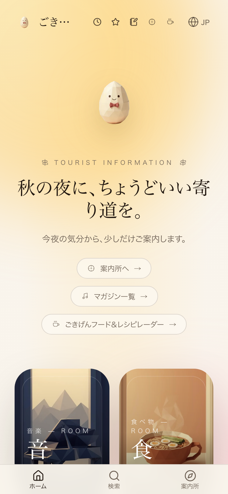
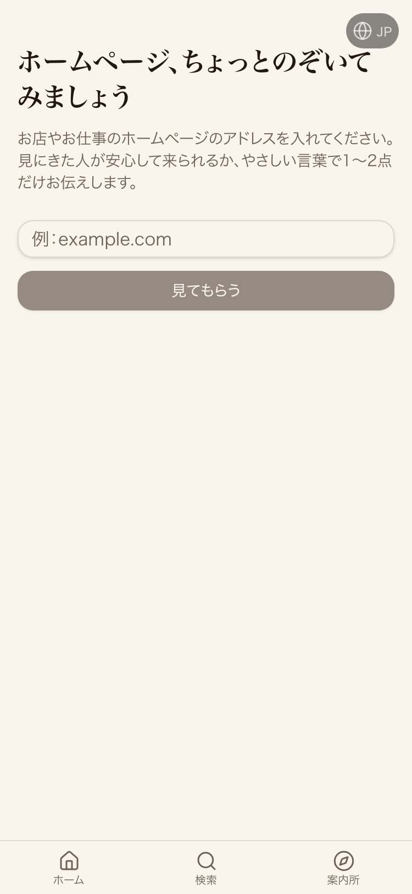

| 確認項目 | 結果 |
|---|---|
| 本番/shindanページ | 200・診断フォーム表示 |
| クリック検品(verify_click.mjs)1回目 | PASS consoleErrorCount:0 |
| クリック検品(verify_click.mjs)2回目 | PASS consoleErrorCount:0 |
| クリック検品(verify_click.mjs)3回目 | PASS consoleErrorCount:0 |
| /api/public/shindan?url=https://example.com | 200・改善提案2件を返す |
| /api/public/shindan?url=http://localhost(SSRF対象) | 400で安全にブロック |